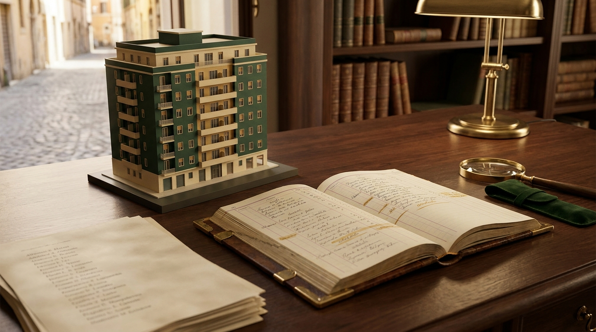

Morosità in condominio: la responsabilità dell'amministratore che non comunica i nominativi
Il creditore del condominio deve poter aggredire prima i morosi e solo dopo i condòmini in regola. Per farlo, ha bisogno dei nominativi: la legge impone all'amministratore di comunicarli. Se l'amministratore omette o ritarda senza giustificazione, può esporsi a responsabilità verso il condominio e, in certi casi, verso lo stesso creditore. Vediamo i contorni effettivi dell'obbligo.

Il fatto
La questione ricorre con frequenza: un creditore del condominio (un fornitore, un'impresa appaltatrice) ottiene un titolo esecutivo e vuole recuperare quanto dovuto. La legge gli consente di aggredire i singoli condòmini, ma con un ordine preciso: prima i morosi, poi — solo se l'incasso resta insufficiente — i condòmini in regola con i pagamenti.
Per esercitare questa facoltà il creditore deve sapere chi sono i morosi e in quale misura. È l'amministratore a detenere questi dati. Quando li nega, li fornisce in modo incompleto o tace, il creditore si trova ostacolato nel recupero. Da qui il tema della responsabilità.
Inquadramento normativo
L'obbligo è scritto nell'art. 63, comma 1, delle Disposizioni di attuazione del Codice civile. La norma stabilisce che i creditori non possono agire nei confronti dei condòmini in regola con i pagamenti se non dopo l'escussione degli altri condòmini, e impone all'amministratore di comunicare ai creditori che ne facciano richiesta i dati dei condòmini morosi.
La base della responsabilità non si esaurisce qui. Nei confronti del condominio, l'amministratore agisce come mandatario: l'art. 1710 c.c. gli impone di eseguire l'incarico con la diligenza del buon padre di famiglia, e l'art. 1130 c.c. elenca i suoi compiti gestori, tra cui la riscossione dei contributi e la tutela degli interessi comuni. L'omessa comunicazione che esponga il condominio a un'azione del creditore in regola integra quindi un inadempimento di natura contrattuale verso il mandante.
Diverso è il profilo verso il terzo creditore. Qui la responsabilità ha natura extracontrattuale (art. 2043 c.c.) e non è automatica: il creditore deve provare il danno e il nesso causale, cioè dimostrare che proprio l'omissione gli ha impedito un recupero altrimenti possibile. Se i morosi erano comunque incapienti, il danno risarcibile può ridursi o venire meno. L'orientamento dei tribunali di merito tende a valorizzare la condotta dell'amministratore, ma rifugge da automatismi: l'onere probatorio resta in capo a chi lamenta il pregiudizio.
Implicazioni pratiche
Per l'amministratore l'obbligo non è una formalità. La comunicazione deve essere completa e tempestiva, ma anche corretta sul piano della protezione dei dati: i nominativi e gli importi vanno forniti solo a chi vanti un titolo o un credito effettivo verso il condominio, e limitatamente a quanto serve al recupero.
In concreto, la comunicazione al creditore dovrebbe contenere: l'identità dei condòmini morosi, l'importo dovuto da ciascuno, l'indicazione della gestione di riferimento (ordinaria o straordinaria) e dello stato dei pagamenti. Vanno evitate informazioni ulteriori non pertinenti, che esporrebbero l'amministratore a contestazioni sul fronte privacy. La diffusione di dati a soggetti privi di titolo non è coperta dall'art. 63 e rappresenta un trattamento illecito.
Per i condòmini in regola, la norma è una garanzia: non possono essere escussi finché il creditore non abbia tentato il recupero verso i morosi. Per i creditori, è uno strumento operativo: la richiesta dei dati è il presupposto pratico dell'azione sussidiaria.
Cosa fare in concreto
Per l'amministratore:
- Riscontrare per iscritto le richieste dei creditori entro un termine ragionevole, fornendo i dati previsti dall'art. 63 e conservando prova della trasmissione.
- Definire un protocollo interno di gestione della morosità: aggiornamento costante delle posizioni debitorie e modalità standard di risposta alle istanze dei creditori.
- Limitare la comunicazione ai dati pertinenti e ai soli soggetti che dimostrino un credito verso il condominio, per rispettare la normativa sulla protezione dei dati.
- Documentare le azioni di recupero già avviate verso i morosi, utili a chiarire la propria diligenza in caso di contestazione.
Per il condomino in regola:
- Verificare, prima di pagare a fronte di una richiesta del creditore, che sia stata tentata l'escussione dei morosi.
Per il creditore:
- Formulare richiesta scritta e specifica dei nominativi prima di agire, così da poter documentare l'ordine di escussione imposto dalla legge.
La norma non introduce un obbligo nuovo né una responsabilità automatica: ribadisce un dovere gestorio già esistente e ne chiarisce i confini. La responsabilità dell'amministratore scatta solo in presenza di un'omissione ingiustificata e di un danno effettivamente provato.
Contributo informativo a cura di Tamburro & Partners - Avv. Giuseppe Tamburro. Non costituisce parere legale.
Ogni condominio ha una storia a sé.
Se gestisci un'amministrazione e vuoi un confronto su una specifica questione condominiale, scrivi allo studio. Ti rispondiamo entro un giorno lavorativo.